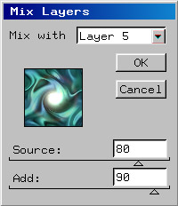
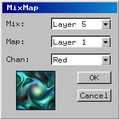
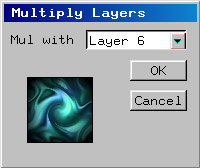
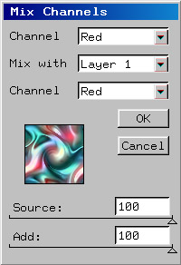
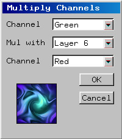

Impact Texture Studio Online Manual
Mix Menu
File menu
Edit menu
Adjust menu
Generation menu
Distortion menu
Blur menu
Mix menu
Color menu
Misc menu
Mixes two layers

Mix with: Layer to mix the current
layer with
Source: Amount of currently selected
layer
Add: Amount of mix layer
Mix layers with map
Mixes two layers with an intensity-map

Mix: Layer to mix the current layer
with
Map: Layer to use as a map
Channel: Channel of the layer to
use as a map
Multiply layers
Multiplies two layers

Mul with: Layer to multiply the currently
selected layer with
Mix channels
Mixes two channels

Channel: Channel of the source layer
Mix with: Layer to mix with
Channel: Channel of the mix layer
to mix with
Source: Source layer intensity
Add: Mix layer intensity
Multiply channels
Multiplies two channels

Channel: Channel of the source layer
Mul with: Multiply layer
Channel: Channel of the multiply
layer